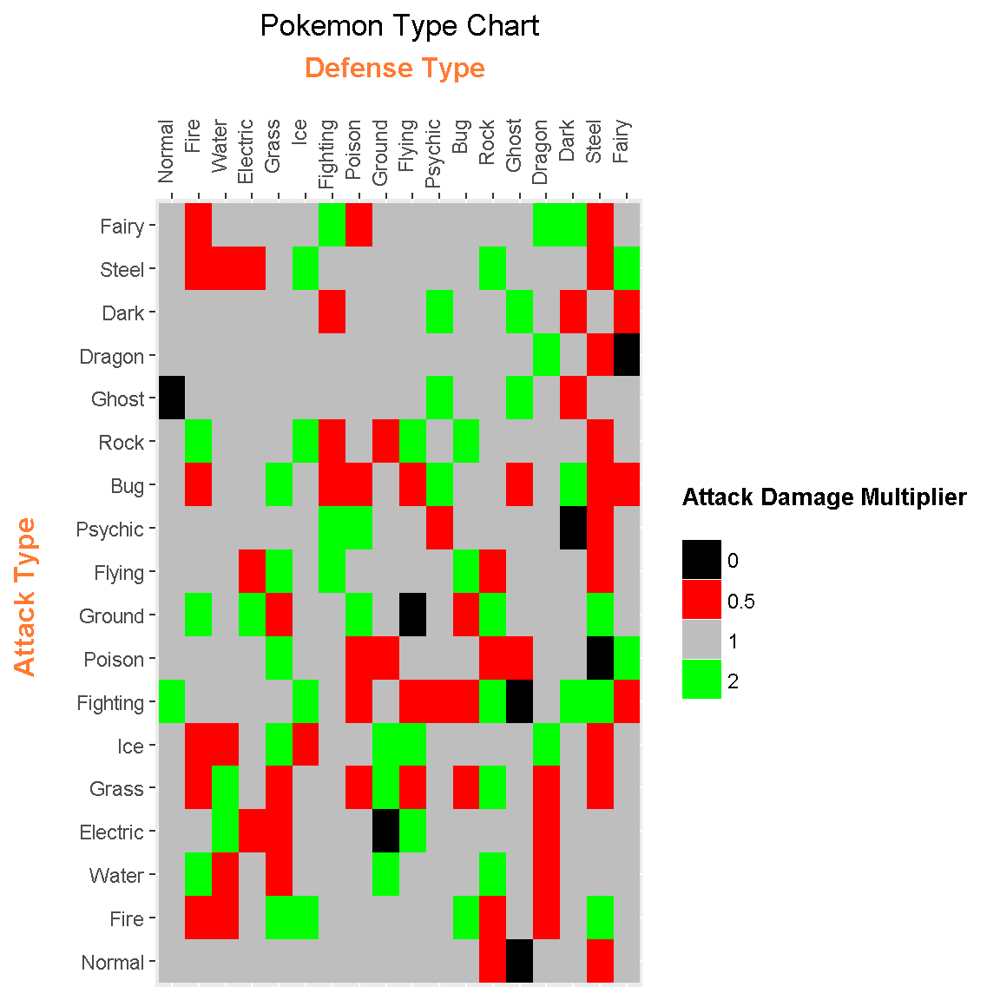

Creating A Pokémon (Gen 6+) Types Table In R
Hi there.
This page is about creating a Pokemon (Gen 6+) Types Table In R. The Fairy type is introduced in Gen 6 (XY) which is included in the plot. The reference I am using ishttp://pokemondb.net/type.
Table Of Contents
- References
- A Pokemon Types Table (Gen 6+)
- Creating A Pokemon Types Table In R
- Creating The Pokemon Types Matrix Plot In R
- Using The Pokemon Types Matrix Plot
References
- http://stackoverflow.com/questions/10232525/geom-tile-heatmap-with-different-high-fill-colours-based-on-factor
- http://stackoverflow.com/questions/16074440/r-ggplot2-center-align-a-multi-line-title
- http://docs.ggplot2.org/dev/vignettes/themes.html
- http://docs.ggplot2.org/current/theme.html
- https://scriptsandstatistics.wordpress.com/2017/03/30/how-to-plot-a-companion-planting-guide-using-ggplot2/
- http://pokemondb.net/type
Related Pages To This Include:
A Pokémon Types Table (Gen 6+)
The geom_tile() function from R’s ggplot2 package allows for grid plots and tables.
In R you can make something as close to this:

Link Source: https://pokemondb.net/type
Creating A Pokémon Types Table In R
We start with creating the table of Pokémon Types with their damage multipliers. In this page we include all the type including Dark, Steel and the Fairy type.
This first line of R code is for creating the Pokémon Types as a vector.
# Reference: http://pokemondb.net/type
# Fairy type now included in Gen 6+:
# Chart Reference: https://img.pokemondb.net/images/typechart.png
pokemonTypes<- c("Normal", "Fire", "Water", "Electric", "Grass", "Ice",
"Fighting", "Poison", "Ground", "Flying", "Psychic",
"Bug", "Rock", "Ghost", "Dragon", "Dark", "Steel", "Fairy")
We check that this vector has a count of 18 for the 18 Pokémon types..
# Length of Vector / Number of Types in Pokemon Gen 6+:
length(pokemonTypes)## [1] 18
Since there are 18 Pokémon types, we would need 18 x 18 = 324 cases in our data table. These 324 cases translates to 324 rows in our table. The table could be inputted manually but that would take too long. Instead, the use of Cartesian products from the mathematical field of Set Theory along with R’s expand.grid() function is applied. Please refer to the code and output below.
# Create Cartesian Product Type Table:
# Attacker in Column 1 and Defender in Column 2
pokeTable <- expand.grid(pokemonTypes, pokemonTypes)
pokeTable <- as.data.frame(pokeTable)
We can check the dimensions of this Cartesian product table of Pokémon types.
# Check dimensions (18 x 18 = 324 combinations):
dim(pokeTable)## [1] 324 2
Instead of viewing the whole table (of 324 rows), the head() and tail() functions are used to view a sample of the table.
# Preview the table using head and tail functions:
head(pokeTable, n = 10)## Var1 Var2
## 1 Normal Normal
## 2 Fire Normal
## 3 Water Normal
## 4 Electric Normal
## 5 Grass Normal
## 6 Ice Normal
## 7 Fighting Normal
## 8 Poison Normal
## 9 Ground Normal
## 10 Flying Normaltail(pokeTable, n = 10)## Var1 Var2
## 315 Ground Fairy
## 316 Flying Fairy
## 317 Psychic Fairy
## 318 Bug Fairy
## 319 Rock Fairy
## 320 Ghost Fairy
## 321 Dragon Fairy
## 322 Dark Fairy
## 323 Steel Fairy
## 324 Fairy Fairy
An empty third column for Attack Damage multiplier is added. (NA means missing value)
# Add third (empty) Column for Attack Damage Mutliplier:
pokeTable[, 3] <- NA
The column titles are currently Var1 and Var2 with an unnamed third column name. The colnames() function is used to assign new column names.
# Rename column names:
colnames(pokeTable) <- c("Attack_Type", "Defense_Type", "Attack Damage Multiplier")
# Check #2:
head(pokeTable, n = 10)## Attack_Type Defense_Type Attack Damage Multiplier
## 1 Normal Normal NA
## 2 Fire Normal NA
## 3 Water Normal NA
## 4 Electric Normal NA
## 5 Grass Normal NA
## 6 Ice Normal NA
## 7 Fighting Normal NA
## 8 Poison Normal NA
## 9 Ground Normal NA
## 10 Flying Normal NA
Filling In The Third Column
This is the part where there is quite a bit of work. Because a third empty column was added there are 324 missing values denoted by NA. Each row where there is an attack type and defense type has to be dealt with separately. (There is no for/while loop solution here.)
If there is attack type advantage then the damage does normal damage (x1). This is denoted by 1 in the third column.
An attack type advantage over the defending Pokémon type results in double the damage applied from the attacking move to the defending Pokémon. This is denoted by 2 in the third column.
If there is an attack type which is not favourable against the defending Pokémon type results in half damage (x1/2). The attacking move was not very effective.
There are cases where certain attack types have no effect on the defending Pokémon type. The damage multiplier her is just 0.
Here is the full code for filling in the third column (Attack Damage Multiplier):
# Fill in third column accordingly:
# 1: Normal Damage, 1/2 Not Very Effective, 0 No effect
# 2 Super Effective
# 18 Per Row/Column
# Normal as Defending Pokemon:
pokeTable[1:18, 3] <- c(1, 1, 1, 1, 1, 1, 2, 1, 1, 1, 1, 1, 1, 0, 1, 1, 1, 1)
# Fire as Defending Pokemon:
pokeTable[19:36, 3] <- c(1, 1/2, 2, 1, 1/2, 1/2, 1, 1, 2, 1, 1, 1/2, 2, 1, 1, 1, 1/2, 1/2)
# Water as Defending Pokemon:
pokeTable[37:54, 3] <- c(1, 1/2, 1/2, 2, 2, 1/2, 1, 1, 1, 1, 1, 1, 1, 1, 1, 1, 1/2, 1)
# Electric as Defending Pokemon:
pokeTable[55:72, 3] <- c(1, 1, 1, 1/2, 1, 1, 1, 1, 2, 1/2, 1, 1, 1, 1, 1, 1, 1/2, 1)
# Grass as Defending Pokemon:
pokeTable[73:90, 3] <- c(1, 2, 1/2, 1/2, 1/2, 2, 1, 2, 1/2, 2, 1, 2, 1, 1, 1, 1, 1, 1)
# Ice as Defending Pokemon:
pokeTable[91:108, 3] <- c(1, 2, 1, 1, 1, 1/2, 2, 1, 1, 1, 1, 1, 2, 1, 1, 1, 2, 1)
# Fighting as Defending Pokemon:
pokeTable[109:126, 3] <- c(1, 1, 1, 1, 1, 1, 1, 1, 1, 2, 2, 1/2, 1/2, 1, 1, 1/2, 1, 2)
# Poison as Defending Pokemon:
pokeTable[127:144, 3] <- c(1, 1, 1, 1, 1/2, 1, 1/2, 1/2, 2, 1, 2, 1/2, 1, 1, 1, 1, 1, 1/2)
# Ground as Defending Pokemon:
pokeTable[145:162, 3] <- c(1, 1, 2, 0, 2, 2, 1, 1/2, 1, 1, 1, 1, 1/2, 1, 1, 1, 1, 1)
# Flying as Defending Pokemon:
pokeTable[163:180, 3] <- c(1, 1, 1, 2, 1/2, 2, 1/2, 1, 0, 1, 1, 1/2, 2, 1, 1, 1, 1, 1)
# Psychic as Defending Pokemon:
pokeTable[181:198, 3] <- c(1, 1, 1, 1, 1, 1, 1/2, 1, 1, 1, 1/2, 2, 1, 2, 1, 2, 1, 1)
# Bug as Defending Pokemon:
pokeTable[199:216, 3] <- c(1, 2, 1, 1, 1/2, 1, 1/2, 1, 1/2, 2, 1, 1, 2, 1, 1, 1, 1, 1)
# Rock as Defending Pokemon:
pokeTable[217:234, 3] <- c(1/2, 1/2, 2, 1, 2, 1, 2, 1/2, 2, 1/2, 1, 1, 1, 1, 1, 1, 2, 1)
# Ghost as Defending Pokemon:
pokeTable[235:252, 3] <- c(0, 1, 1, 1, 1, 1, 0, 1/2, 1, 1, 1, 1/2, 1, 2, 1, 2, 1, 1)
# Dragon as Defending Pokemon:
pokeTable[253:270, 3] <- c(1, 1/2, 1/2, 1/2, 1/2, 2, 1, 1, 1, 1, 1, 1, 1, 1, 2, 1, 1, 2)
# Dark as Defending Pokemon:
pokeTable[271:288, 3] <- c(1, 1, 1, 1, 1, 1, 2, 1, 1, 1, 0, 2, 1, 1/2, 1, 1/2, 1, 2)
# Steel as Defending Pokemon:
pokeTable[289:306, 3] <- c(1/2, 2, 1, 1, 1/2, 1/2, 2, 0, 2, 1/2, 1/2, 1/2, 1/2, 1, 1/2, 1, 1/2, 1/2)
# Fairy as Defending Pokemon:
pokeTable[307:324, 3] <- c(1, 1, 1, 1, 1, 1, 1/2, 2, 1, 1, 1, 1/2, 1, 1, 0, 1/2, 2, 1)
This next piece of code involves having the values from the third column as factors. In addition, I check the structure of the table and use the head() and tail() functions.
# Have the multipliers in column 3 as factors:
pokeTable[, 3] <- as.factor(pokeTable[, 3])
# Check structure:
str(pokeTable)## 'data.frame': 324 obs. of 3 variables:
## $ Attack_Type : Factor w/ 18 levels "Normal","Fire",..: 1 2 3 4 5 6 7 8 9 10 ...
## $ Defense_Type : Factor w/ 18 levels "Normal","Fire",..: 1 1 1 1 1 1 1 1 1 1 ...
## $ Attack Damage Multiplier: Factor w/ 4 levels "0","0.5","1",..: 3 3 3 3 3 3 4 3 3 3 ...
## - attr(*, "out.attrs")=List of 2
## ..$ dim : int 18 18
## ..$ dimnames:List of 2
## .. ..$ Var1: chr "Var1=Normal" "Var1=Fire" "Var1=Water" "Var1=Electric" ...
## .. ..$ Var2: chr "Var2=Normal" "Var2=Fire" "Var2=Water" "Var2=Electric" ...# Check #3:
head(pokeTable, n = 10)## Attack_Type Defense_Type Attack Damage Multiplier
## 1 Normal Normal 1
## 2 Fire Normal 1
## 3 Water Normal 1
## 4 Electric Normal 1
## 5 Grass Normal 1
## 6 Ice Normal 1
## 7 Fighting Normal 2
## 8 Poison Normal 1
## 9 Ground Normal 1
## 10 Flying Normal 1tail(pokeTable, n = 10)## Attack_Type Defense_Type Attack Damage Multiplier
## 315 Ground Fairy 1
## 316 Flying Fairy 1
## 317 Psychic Fairy 1
## 318 Bug Fairy 0.5
## 319 Rock Fairy 1
## 320 Ghost Fairy 1
## 321 Dragon Fairy 0
## 322 Dark Fairy 0.5
## 323 Steel Fairy 2
## 324 Fairy Fairy 1 
Creating The Pokémon Types Matrix Plot In R
 
The table of Pokémon Types and damage multipliers is now ready for plotting purposes.
The ggplot2 package in R for data visualization is first loaded.
 
library(ggplot2) 
Here is the code and output for the Pokémon types matrix plot. In this plot, the defending Pokémon types are on the x-axis (horizontal) and the attacking move type is on the y-axis (side/vertical).
## Attack Type on x-axis and Defense Type on y-axis with x-axis labels on top:
ggplot(pokeTable,aes(x = pokeTable[, 2],y = pokeTable[, 1], fill = pokeTable[, 3])) +
geom_tile() +
scale_fill_manual(values = c('black', 'red','gray', "green")) +
labs(x = "Defense Type \n", y = "Attack Type \n",
title = "Pokemon Type Chart", fill = "Attack Damage Multiplier \n") +
theme(plot.title = element_text(hjust = 0.5),
axis.title.x = element_text(face="bold", colour="#FF7A33", size = 12),
axis.title.y = element_text(face="bold", colour="#FF7A33", size = 12),
axis.text.x = element_text(angle = 90,vjust = 0.2, hjust = 1),
legend.title = element_text(face="bold", size = 10)) +
scale_x_discrete(position = "top")
Using The Pokemon Types Matrix Plot
For this section, we will refer to the plot that was just shown.
Using this table is not too hard.
As an example, if the defending Pokemon type is a Rock type and the attacking move is a water type then the attack would double the normal damage as indicated by the green square.
Dual Typed Defending Pokemon Cases
There are dual-typed Pokemon tables out there but you could use the single type table twice. As an example, an Ice type move to a Grass and Water type would deal normal damage (x1) as we have the multipliers of 2 and 1/2.
Simple Table Observations
- One could use these types of tables to study type matchups for Pokémon selections in certain video games and competitions.
- The Steel Type is still a very solid defensive choice as a lot of attacks do half damage to Steel types.
- Poison as an attacking type is not very great despite its advantage over the Fairy type.
- It is somewhat difficult to pick out the best attacking types. Candidates include Ground, Fire, Ice and Rock types.
- The Fairy type is okay for attacking. Its defense is decent as Dark, Fighting and Bug attacks are not very effective versus Fairy types. Dragon attacks have no effect on Fairy types. Only * Steel and Poison moves are super effective versus Fairy.
- The Fire type is a good defensive type as well.